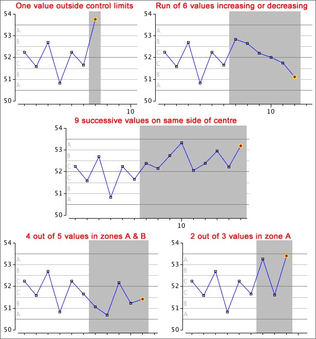
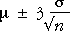
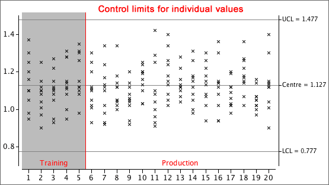

If you don't want to print now,
Origins of TQM
Total Quality Management (or TQM for short) is an approach to management of organisations and processes. The aim is to continuously improve the quality of products and services through statistical methods of monitoring and improving.
The Six Sigma programme is a popular approach to TQM.
Importance of quality
The quality of a product or service depends on whether it satisfies the needs of its consumers. Quality must always be a major focus.
This chapter focuses on the statistical aspects of quality management, and in particular on the concept of statistical quality control through control charts.
Continuous quality improvement
Statistical analysis is an important part of long-term monitoring and improvement of the performance of many types of system. This process is often called continuous quality improvement.
The statistical part of the process again involves a feedback cycle of data collection and analysis, aimed at improving aspects of the system.
The Plan-Do-Check-Act cycle is most often used in commerce and industry, but can also be used to 'improve' many biological and other systems.
Finding the cause of problems
Control charts (and other collected data) may indicate problems with a system. However, after detection of a problem, its cause must be identified in order to rectify it. This is usually a non-trivial exercise and the following tools often help.
Brainstorming
In a brainstorming session, all team members contribute short phrases that are written on either a large sheet of paper or individual scraps of paper (post-it notes are good). The points should be written down without discussion or editing, and all team members should be encouraged to contribute.
Once these ideas have been written down, they must be structured or grouped in some way.
Cause-and-effect diagrams
After possible causes for a problem have been contributed in a brainstorming session, they can be structured in a cause-and-effect diagram (also called a fishbone diagram).

This structuring of possible causes helps to focus attention on the most likely causes and on ones that may be altered in the 'Do' step in the Plan-Do-Check-Act cycle.
Detecting problems
Problems in a process are usually detected by collecting and analysing data about the performance of the system. Control charts are a particularly useful way to monitor processes and detect problems before they get too out of hand.
Inherent variability
A certain level of variability in any process is unavoidable. We say that this 'acceptable' level of variability is a result of common causes (or random causes) and if it is the only source of variability, the process is said to be in control.
Systematic changes
Our aim is to detect changes to the output that are not the result of common causes. Such systematic changes are said to be the result of special causes (or assignable causes) and could result in...
Systematic changes usually indicate problems with the quality of the output and the process is said to be out of control.
Run chart
A control chart plots measurements describing the process in time order — a type of time series plot. We hope to use it to quickly detect problems and adjust the process to maintain quality. If a single value is recorded at each time, the control chart is called a run chart. (Other control charts plot sample means and ranges.)
The challenge is to detect systematic changes in the control chart (due to special causes) over the background level of variability (due to common causes).
In the example below, the manager has determined that an output measurement should 'almost always' be between 2,000 and 2,080 with variability in this range considered to be due to common causes. Two out of the last four values were above the upper limit, suggesting a problem with the process that should be investigated and fixed.

Control limits
The simplest rule suggesting a special cause is any value that is outside two control limits. Values outside the control limits suggest that the process is out of control — they trigger an examination of the process for a special cause.
Control limits are usually based on the mean and standard deviation of the process when it is in control. The 70-95-100 rule of thumb states that in many distributions,

By setting the upper and lower control limits to be 3 standard deviations on either side of the process mean, we avoid many 'false alarms' when the process is in control. This is important since values outside the control limits would trigger an examination of the production process — possibly a costly exercise.
Shape of the distribution
The 70-95-100 rule of thumb is most accurate for reasonably symmetric, bell-shaped distributions, though values more than 3 standard deviations from the mean are rare for all distributions. However these control limits should be avoided for very skew distributions — consider transforming the data before producing a run chart.
Additional triggers for an out-of-control process
The most commonly used indication of a process being out-of-control is a value outside the upper and lower control limits (more than three standard deviations away from the centre line). This is sensitive to changes to the process mean or increases in the process variability.
Additional triggers have been proposed that are also sensitive to systematic changes in a process. These are all based on successive values within 1, 2 or 3 standard deviations from the centre (Zones C, B or A).

Only the first three of these need be remembered in this course.
False alarms
Although the individual patterns that we use as triggers occur rarely in a process that is in control, they do occur occasionally. Indeed, the proportion of values from a stable process that triggers each of the criteria is typically about 1 in 200, so if all five criteria are used, a reasonable number of false alarms will occur.
Clearly a single exceptional value is not conclusive proof that the process is out of control. However it is appropriate to examine carefully the operation of the process to look for an assignable cause for this value (and adjust the process if such a cause is discovered). And a series of such values does indicate that the process is out of control.
Obtaining control limits
It is important to evaluate control limits from the mean and standard deviation of values from the process when it is in control. The process should be monitored carefully (to avoid special causes) for this training period.

Control chart principles
Since measurements are rarely more than 3 standard deviations from the mean, we usually define the control limits to be:
(mean measurement) ± 3 × sd (measurement)
where the mean and standard deviation are obtained when the process is in control. Future measurements outside the control limits are unlikely if the process remains in control.
Control charts based on samples
In practice, control charts are rarely based on individual measurements from a process. Instead, a small sample of measurements is usually recorded at each time. By creating separate control charts for the sample means and sample ranges, we can separately assess the process mean and its variability since quality depends on both maintaining a consistent mean and low variability.
Control charts for sample means and ranges are constructed in a similar way to run charts but the details differ.
Control chart for means
We first consider detection of whether the mean output level of a process is changing. Each sample of n values has a mean whose standard deviation is
| = |
If we knew µ and σ, the appropritate control limits would therefore be:

Note that these control limits are much narrower than those that would be used for individual values,

Training data
Since neither µ nor σ are usually known, the control limits must be estimated from training samples in which great care is taken to avoid special causes. It would be reasonable to replace µ and σ in the control limits with the mean and standard deviation of the training data, but in practice, the control limits are usually based on the mean and range of the k training samples as follows:

where  is
the average of the k training sample means, and
is
the average of the k training sample means, and  is
average of their ranges,
is
average of their ranges,

The constant, A2, can be found from the following table provided the sample size, n, is no more than 10.
| Sample size, n | A2 |
|---|---|
| 2 | 1.880 |
| 3 | 1.023 |
| 4 | 0.729 |
| 5 | 0.577 |
| 6 | 0.483 |
| 7 | 0.419 |
| 8 | 0.373 |
| 9 | 0.337 |
| 10 | 0.308 |
Note that A2 depends on n, not the number of training samples, k.
Example

The control limits for the sample means are much narrower and are therefore more sensitive to changes in the process mean.

Detecting changes to process variability
A control chart of sample means is used to detect shifts in the 'centre' of a process. In a similar way, a control chart of sample ranges is used to assess whether the process variability has changed.
Control chart for range
Control charts for ranges are constructed and interpreted in a similar way to control charts for means — there is very little chance of observations breaching the control limits if the process is in control — but the control limits are obtained in a different way.

where  is
again the average of the training sample ranges. The constants D3 and D4 depend
on the common training sample size n and
are tabulated below.
is
again the average of the training sample ranges. The constants D3 and D4 depend
on the common training sample size n and
are tabulated below.
| Sample size, n | D3 | D4 |
|---|---|---|
| 2 | 0 | 3.267 |
| 3 | 0 | 2.575 |
| 4 | 0 | 2.282 |
| 5 | 0 | 2.115 |
| 6 | 0 | 2.004 |
| 7 | 0.076 | 1.924 |
| 8 | 0.136 | 1.864 |
| 9 | 0.184 | 1.816 |
| 10 | 0.223 | 1.777 |
Note that the lower control limit is zero for sample sizes of 6 and lower.
Example

Attributes and defects
A p-chart is used to monitor the proportion of process output that has a certain attribute, such as the proportion of items with defects.
If x items in a sample of size n have the attribute, then x has a binomial distribution and the sample proportion p = x/n has mean and standard deviation:

where π is the population proportion.
Control limits
As in other control charts, the control limits are given by the mean ± three standard deviations,

Since π is unknown, it is estimated from a training period in which the process is in control. If defective proportions p1, p2, …, pk are observed in k samples of size n, our best estimate is

and the control limits are therefore

Example
In a training period, it was observed that 4% of orders were incorrectly processed. A control chart for the proportion of incorrectly processed orders in samples of n = 20 orders has control limits

Since a proportion must always lie between 0 and 1, this means that the lower control limit is effectively equal to 0.
A p-chart for eight further samples of n = 20 orders is shown below:

On day 7 the proportion of incorrectly processed orders (4/20 = 0.2) exceeds the upper control limit, the process is out of control and should be investigated for special causes.
Only act on special cause variation
One of the principles behind the use of control charts is that:
Management should only intervene in a process if it is out of control, i.e. if it is subject to special cause variation.
It has been found that the majority of problems in process management occur as a result of changes introduced by management in response to perceived variation. In other words, managers have a tendency to “meddle” or “tinker” with a process that is merely exhibiting its inherent (i.e. common cause) variation.
Red bead experiment
Deming illustrated this tendency to fiddle with a stable process by devising a famous experiment known as the red bead experiment. Briefly, the experiment consisted of mixing together a large number of red and white beads in a barrel or large jar. Participants were told that white beads were 'better' than red ones.
'Workers' randomly picked samples of beads from the barrel and were rewarded or reprimanded by 'managers' based on the proportion of white beads. The actual number of white beads is binomial with the same n and p for each sample — common cause variation — so the intervention of the managers is totally unproductive.
Deming made the point that managers should not meddle with a stable process but rather listen more to the workers who are in a much better position to suggest improvements to the process.
What you need to know
You will not be examined about everything in this chapter. Some of the material has been included to explain why the chapter's methods are used, in the hope that it will help you to understand these methods better. What you need to learn for the exam is more limited.
We now describe what we expect you to be able to do in the exam after studying the control charts chapter.
A. Total quality management
B. Control charts
Control charts track the preformance of processes over time.